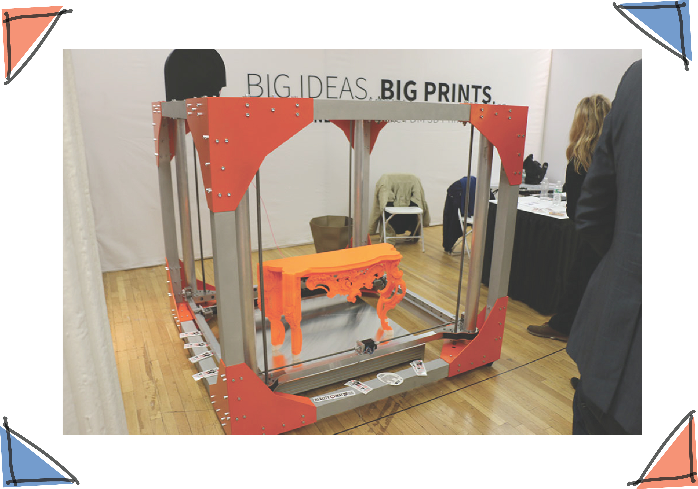

Overview
3D printing is based on the process of additive manufacturing where the printing is done layer by layer to create a three dimensional object. It helps reduce the manufacturing and production cost of producing objects using traditional techniques of melding and forging. The first step is to create a blueprint of the object that needs to be 3D printed which can be created using 3D modeling software like Autodesk Fusion. Once that is done, it is sent to the printer. Some printers like that of the Makerbot have a spool of replaceable plastic attached to the back of the device. Once data is sent to the printer, the plastic strip is melted and laid out in layers onto a plate where it instantly cools down. The printer adds only layer at a time to create a fully formed structure of the object.
There are several advantages to using 3D printing technique. It can help create complex designs, customize each and every item in terms of size or shape, eliminates the need to use tools, has low fixed cost, faster prototyping and creates less waste. However, it also has certain disadvantages like a higher cost for large production runs, less material choices and colors, limited strength and endurance and finally, lower precision.
However, it is a fast-growing technology holding a lot of promise for the design and manufacturing industry.